A Chronological and Incomplete Record
So Spud and Brian have been throwing a biennial News Years shindig for the past ten years. The party usually consists of a bunch of us who went to college together, and anyone we might have picked up along the way. The event is usually pretty freakin' cool, and has always taken place in a posh Seattle hotel.
This time around, in order to commemorate the millennial roll-over, Spud and Brian decided to completely outdo themselves by throwing this year's event in one of the Presidential Suites at the Four Seasons Hotel. This was easily the fanciest hotel I'd ever been in - I felt incredibly under-dressed as soon as I walked into the lobby. The party itself was fully catered by the hotel, and featured a full-service open bar. This latter detail will no doubt be evident in the following photos.
In a daring step towards The Future , the music was provided via a laptop and seven hours worth of MP3s. This was, in turn, piped through the room's adequate sound system. The play list was worked out by Spud and me, and we even went so far as to ensure that the segue between tracks was okay. Yes, we're that dedicated to your party experience....
One picture I took, which came out quite poorly, was of the list of events in the hotel that day. "Hamrick Family Function" was listed as occuring in the Cascade Room. We all got a damned good laugh outta this.
There were a bunch of folks at the party who didn't wind up in front of my camera, mainly 'cause I'm knew to this whole "take pictures of things" concept. My apologies to everyone I missed (especially the well-dressed Amazon contingent of Hitesh, Kotas, and Blunt). "I'll get you next time."
| 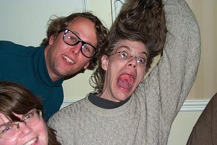 | Jon and Brian pose for the first picture of the evening. Sheri smiles in the corner, only to be devoured moments later by Brian's enormous maw. |
| 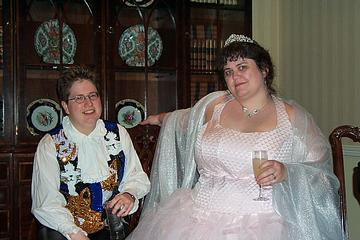 | Hobbit and Laura sport their millennial finery. Hobbit had this great leather coat that topped off her outfit, and like a dork I failed to get a picture of it.... |
| 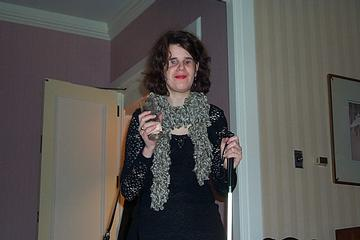 | Mia, like most of the Drizzle attendees, was incredibly well dressed. Her scarf was made of something unnaturally soft and fluffy. |
| 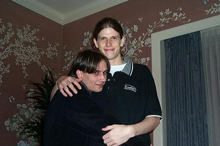 | Kurt clings to Brett as the Scary Man approaches with the camera. |
| 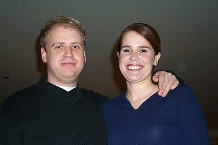 | Andy and Marie brought a much-needed air of civility to the proceedings. |
| 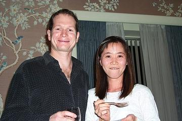 | Clint and his girlfriend. She was daring and bold when confronted with the Unknown at the snack table. |
| 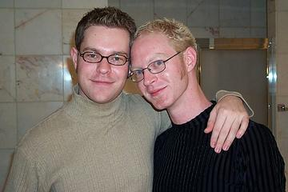 | Mark and Will pose in the Big Marble Bathroom, before the Randoms took it over. Note how well managed Mark's hair is. |
| 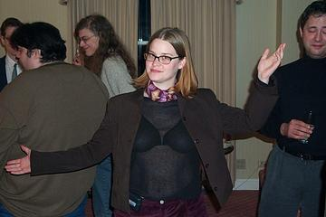 | Terri in her best "Blackmail Me" pose. |
| 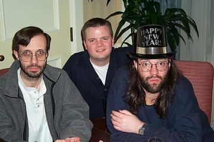 | Tim and Ryan and Andy, in a picture that could just as well have been taken twelve years ago. Eerie. |
| 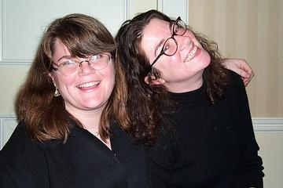 | Sheri and Holly as The Women of 2001. Bold! Sassy! Wearing Black! |
| 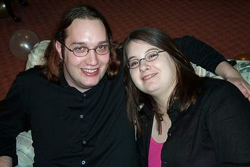 | Eric and Leah, sporting the "Fresh Back From Kentucky" glow. |
| 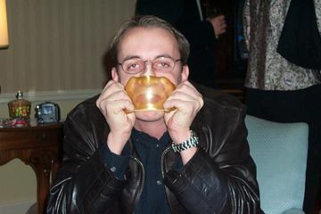 | Sean, doing what Sean does best. You can help - please send your cash donation to "Keep Soybomb Off Our Streets". |
| 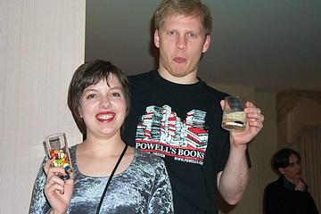 | Amy and Kirk getting loaded on their favorite poisons. |
| 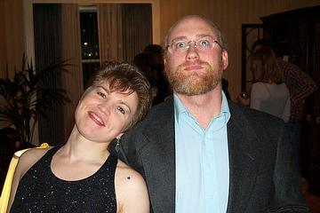 | Sara and Chris. And yeah, that's as relaxed as Chris ever gets. |
| 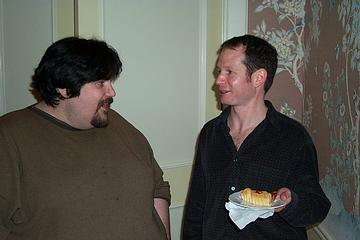 | Spud mingles with Clint. Rarely has this behavior ever been captured on film - moments later Spud scampered off, no doubt to continue his almost ritualistic mingling. |
| 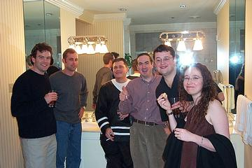 | The Randoms who took over the Big Marble Bathroom. I have no idea who these folks were, but they seemed to enjoy the free booze. Special insight for kids: jaccuzis and sinks are not meant to be ashtrays. |
| 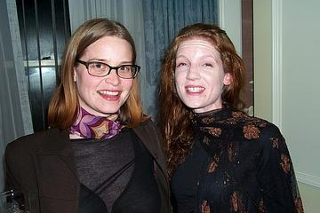 | Terri and Beth, dressed to kill and looking fabulous. Beth didn't care much for the flash on the camera, and proceeded to smash things until her vision was restored. |
| 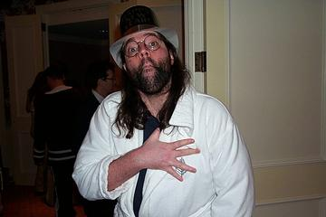 | Andy Hamlin sporting one of the Four Season's fine robes. As always, Andy set a robe-wearing trend that would last well into the wee hours. |
| 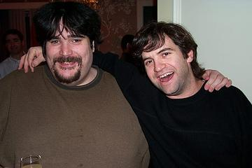 | Spud and Robert. Spud was mingling like a professional at this point. |
| 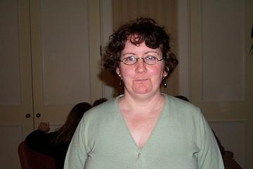 | Maria, who appeared to be pleasantly surprised to find a camera staring her down. |
| 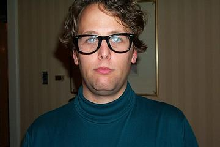 | Jon wanted a "serious" picture taken. I should have taken one of him later, when he was "seriously" lit. |
| 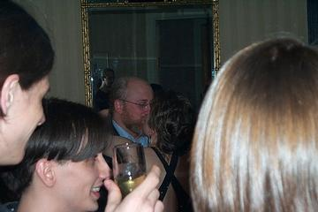 | Midnight finds Chris and Sara waiting for the world to end. |
| 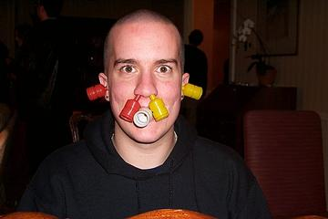 | Chad, who hadn't had anything to drink. Yes, folks, he's like this naturally. |
| 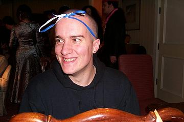 | Moments later we find him in a daintier repose. |
| 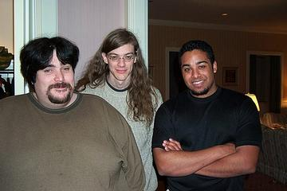 | Spud, Brian, and Eli. Eli was pretty swell for a man who answers to CheeseLick. |
| 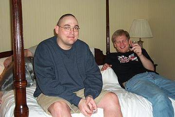 | "Oh, heh...Hi, Mom!" We weren't doing anything. Honest. |
| 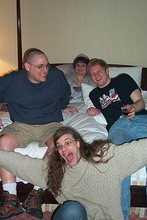 | Me and Laura and Kirk, with Brian (who never misses a good photo-op). |
| 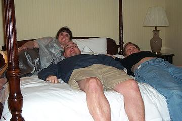 | Laura's looking mighty pleased as Princess of the Canopy Bed as her subjects look on. |
| 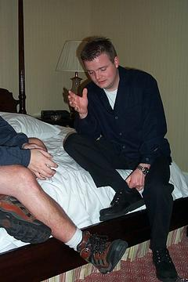 | "It's just like Descartes said. No, it was Sartre. No, Descartes. Ah, screw it. They were all just whack bitches, anyway." |
| 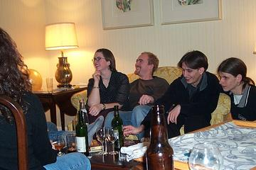 | The most domestic scene of the evening - Brett and Kurt and Moses and his wife. This was as close to wholesome as the party got (well, after Andy and Marie took off). |
| 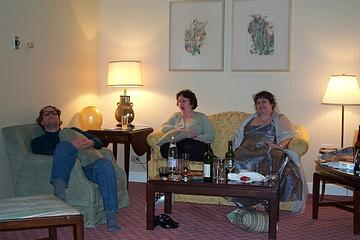 | Jon and Maria and Laura. This is the last time we'd see Jon in anything like an upright position for the next couple hours. It's also the last time we'd see Maria awake. |
| 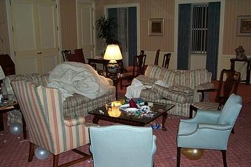 | Oh, the aftermath. This picture would be more stunning had I thought to take a "before" shot. |
| 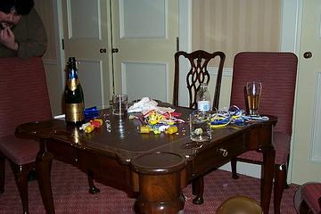 | Spud surveys the damage. "Look upon my works, ye mighty, and despair." |
{kind=link}